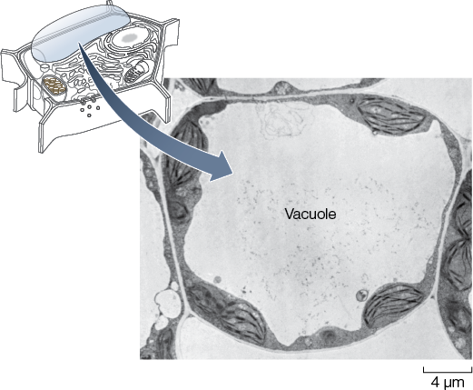

Maturation
maturation
The act of coming to full development; becoming mature is called as maturation.
Definition of a maturation
The act of coming to full development; becoming mature is called as maturation.
Maturation is a type of: change of state.
|
concept map
|
Vacuoles in Plant Cells Are Usually Large
The large central vacuole in this cell is typical of mature plant cells.

|
Further reading
- 5.2 Eukaryotic Cells Contain Organelles
- 11.3 Cell Division Plays Important Roles in the Sexual Life Cycle
- 11.4 Meiosis Leads to the Formation of Gametes